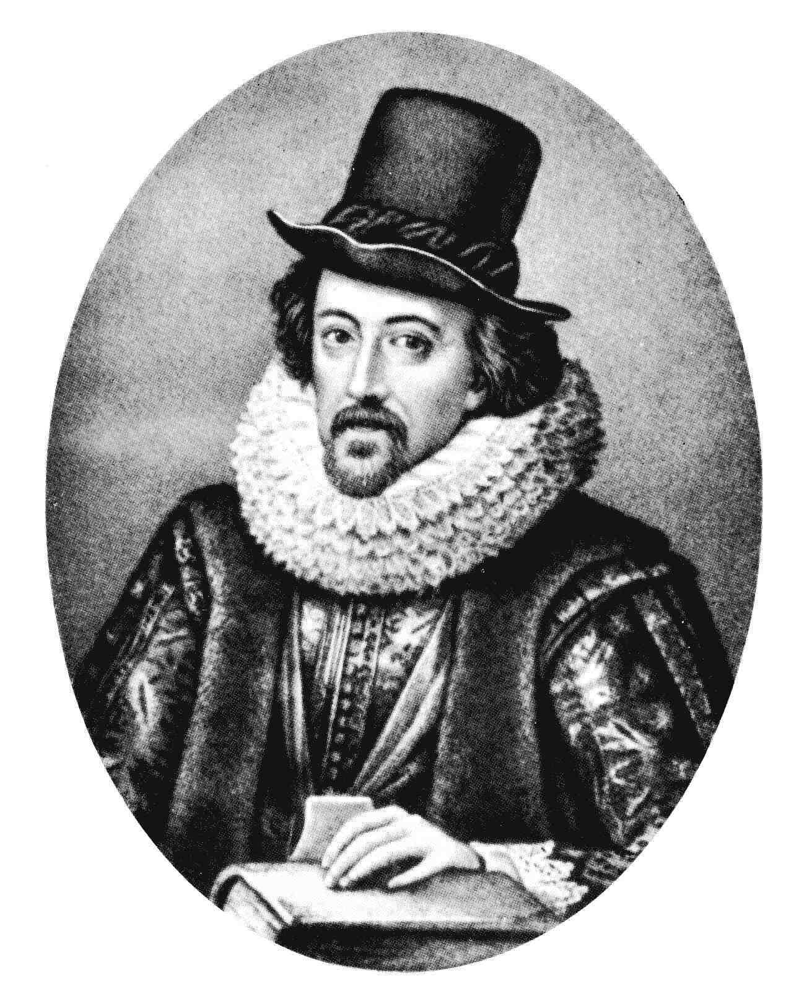

Фрэнсис Бэкон
22 января 1561 г. - 9 апреля 1626 г.

Детство и юность
Основоположник эмпиризма родился 22 января 1561 года, в особняке Йоркхаус, на центральной лондонской улице Стрэнд. Отец ученого, Николас, был политическим деятелем, а мать Анна (в девичестве Кук) была дочерью Энтони Кука - гуманиста, воспитавшего короля Англии и Ирландии Эдуарда VI.
Мать с юных лет прививала сыну любовь к знаниям, и у нее, девушки, знающей древнегреческий язык и латынь, это с легкостью получалось. К тому же мальчик и сам с нежного возраста проявлял интерес к знаниям. В течение двух лет Фрэнсис учился в Тринити-колледже Кембриджского университета, затем три года провел во Франции, в свите английского посла сэра Эмиаса Паулета.
После смерти главы семейства в 1579-м Бэкон остался без средств к существованию и поступил для изучения права в школу барристеров. В 1582-м Фрэнсис стал адвокатом, а в 1584-м - членом парламента, и вплоть до 1614-го играл видную роль в дебатах на сессиях Палаты общин. Время от времени Бэкон составлял послания королеве Елизавете I, в которых стремился беспристрастно подойти к насущным политическим вопросам.
Сейчас биографы сходятся во мнении, что если бы королева последовала его советам, пары конфликтов между короной и парламентом можно было бы избежать. В 1591-м он стал советником фаворита королевы - графа Эссекса. Бэкон сразу дал понять патрону, что предан стране, и когда в 1601 Эссекс попытался организовать переворот, Бэкон, будучи адвокатом, участвовал в его осуждении как государственного изменника.
Из-за того, что люди, стоящие выше Фрэнсиса по званию, видели в нем соперника, и потому, что он часто в эпистолярной форме выказывал свое недовольство относительно политики Елизаветы I, Бэкон вскоре потерял расположение королевы и не мог рассчитывать на продвижение по службе.
В 1603 Бэкону было пожаловано звание рыцаря, он был возведен в титул барона Веруламского в 1618-ом и виконта Сент-Олбанского - в 1621-ом. В том же 1621 году философ был обвинен в получении взяток. Он признал, что люди, дела которых разбирались в суде, неоднократно дарили ему подарки. Правда, то, что это влияло на его решение, адвокат отрицал. В итоге Фрэнсиса лишили всех постов и запретили появляться при дворе.
Философия Бэкона
«Новая Атлантида» Бэкона
Фрэнсис Бэкон был проникнут мыслью о том, что развитие науки приведёт в будущем к наступлению золотого века. При почти несомненном атеизме он писал о предстоящих великих открытиях с приподнятым энтузиазмом религиозного пророка и относился к судьбе науки, как к своеобразной святыне. В своей неоконченной философской утопии «Новая Атлантида» Бэкон рисует счастливую, комфортную жизнь мудрого, небольшого народа островитян, которые систематически применяют в «доме Соломона» все ранее сделанные открытия для новых изобретений. У обитателей «Новой Атлантиды» есть паровая машина, воздушный шар, микрофон, телефон и даже вечный двигатель. Самыми яркими красками Бэкон изображает, как всё это улучшает, украшает и удлиняет человеческую жизнь. Мысль о возможных вредных последствиях «прогресса» даже не приходит ему в голову.
Бэкон «Великое восстановление наук»
Все главные книги Фрэнсиса Бэкона объединяются в одно гигантское произведение под названием «Великое восстановление наук» (или «Великое возрождение наук»). Автор ставит в нём перед собой три задачи: 1) обзор всех наук (с установлением и специальной роли философии), 2) развитие нового метода естествознания и, 3) его применение к единичному исследованию.
Решению первой задачи посвящены сочинения Бэкона «О преуспеянии знания» и «О достоинстве и приумножении наук». Книга «О достоинстве и приумножении наук» составляет первую часть «Великого восстановления». Бэкон даёт в ней обзор человеческих знаний (globus intellectualis). По трем основным способностям души (памяти, воображению и рассудку) он разделяет все науки на три ветви: «историю» (опытные знания вообще, гуманитарные и естественные), поэзию и философию.
Философия имеет три объекта: Бога, человека и природу. Однако познание Бога, по Фрэнсису Бэкону, недоступно человеческому уму и должно черпаться только из откровения. Науки, изучающие человека и природу – антропология и физика. Опытную физику Бэкон считает «матерью всех наук». Метафизику (учение о первоначальных причинах вещей) он в число наук включает, но склонен смотреть на неё как на излишнее умозрение.
Вторую часть «Великого восстановления наук» составляет «Новый Органон», где Бэкон излагает свой новый научный метод. Он предполагал написать ещё четыре части «Великого восстановления», но не успел этого сделать. В третьей части Бэкон собирался изложить «Естественную и опытную историю». Четвёртая часть должна была носить название «Лестницы разума». В ней философ собирался показать причины и следствия фактов и явлений, собранных в третьей части, с целью подготовки к более совершенным открытиям. В пятой части «Великого восстановления наук» («О предварительных посылках философии») Бэкон думал собрать самые распространенные и доказанные общефилософские мнения, а в шестой («Второй философии») – выводы из этих мнений, сделанные индуктивными приемами.
«Новый органон» Бэкона
Второй частью «Великого возрождения наук» является работа «Новый Органон» (1620). «Органоном» в истории философии именуется общий свод трудов Аристотеля по логике. В аристотелевском учении логика выполняла роль главного метода. Как показывает заглавие «Нового органона», Бэкон хочет противопоставить старой методологии Аристотеля новую.
Он формулирует в этой своей книге противоположный аристотелевскому метод познания природы. Основа этого метода – не отвлечённые логические умозаключения, а эмпиризм, опыт. Ценность опыта признавалась уже в античности. В Средние века на неё обращали внимание Альберт Великий, а также земляк и однофамилец Фрэнсиса Бэкона, философ Роджер Бэкон. Но предшественники Фрэнсиса Бэкона использовали опыт случайный, а он призывает в «Новом Органоне» заменить его планомерным экспериментом, методическим исследованием. Развитие знания, согласно Бэкону, должно базироваться не на случайных открытиях, а идти как заранее обдуманный процесс. Главную цель своей философии он и видит в том, чтобы сформулировать правильный метод изобретений. Без такого метода, считает Бэкон, будут действовать втуне даже сильные умы. «Калека, который идет верной дорогой, может обогнать рысака, если тот бежит не по настоящей дороге; даже более, – чем быстрее бежит рысак, раз сбившийся с пути, тем дальше оставит его за собой калека».
Фрэнсис Бэкон об идолах
Бэкон в своей философии полагает, что новая наука должна исходить из опыта, но он отнюдь не приравнивает его к обычным, житейским, некритическим представлениям обывателя. Общераспространённые взгляды, напротив, содержат в себе много ложного, ибо «ум человеческий может быть уподоблен зеркалу с неровной поверхностью, на которое падают лучи от предметов и которое, примешивая свои собственные свойства к свойствам предметов, обезображивает и искажает их». Как Аристотель указал ошибки в логических умозаключениях, так Бэкон хочет указать ошибки в эмпирических восприятиях и очистить истинный опыт от вредных примесей.
Он делает это в своём знаменитом учении об идолах – ложных привычках и предрассудках, которые, подобно поклонению мнимым богам, вводят людей в тяжкие заблуждения. Бэкон называет четыре вида идолов.
Идолы пещеры (idola specus) – заблуждения, возникающие от особенностей чувств и неверных жизненных впечатлений отдельного человека. От них сравнительно легко избавиться сравнением опытов нескольких индивидуумов.
Серьёзнее идолы театра (idola theatri), создаваемые верой в авторитеты (в философии, по Бэкону, опаснее всего – рабское преклонение перед «метафизиком» Аристотелем). С этим, вторым, видом идолов надо бороться, приучая себя смотреть на всё собственными глазами.
Третий вид идолов – идолы площади или рынка (idola fori) – всеобщие, вековые предрассудки человечества, которые люди воспринимают друг от друга в процессе общения.
Четвёртый, самый вредный вид идолов Бэкона – идолы рода (idola tribus), которые коренятся не в личных или коллективных заблуждениях, а в несовершенстве самого человеческого существа, его чувств и ума. Опаснейшее проявление этого несовершенства – тяга к телеологическому взгляду, стремление усматривать в судьбе отдельных вещей и всём бытии какую-то высшую цель – иначе говоря, религиозность. Фрэнсис Бэкон считает, что никакой телеологии в мире нет. Истинная связь вещей – чисто механическая причинность, телеологию же следует напрочь изгнать из процесса познания, причём, не только в естественных, но и в гуманитарных науках. Такой подход позволяет признавать Бэкона отцом философии позитивизма.
Эмпирический метод научного познания Бэкона
«Критические», «отрицательные» рассуждения об идолах Фрэнсис Бэкон дополняет «положительным» изложением собственного метода научного познания. В основу его он кладёт систематический эксперимент. Случайного опыта Бэкон в процессе познания призывает избегать, ибо его обобщения могут приводить к частным, применимым не во всех случаях, а иногда и к совершенно ложным результатам.
Выводы ведомых по обдуманной, методической системе экспериментов следует обобщать при помощи индукции – то есть, умозаключениями от частного к общему, а не наоборот, не следуя путём дедукции от общего к частному, как часто делает телеологическая философия. Чтобы познать индуктивным путем «причины» того или иного явления, наука, по Бэкону, должна пользоваться «перечислением»и «исключением» опытных данных. Нужно сопоставлять эмпирические факты в поисках таких, где исследуемое свойство или явление присутствует и где оно отсутствует, рассматривать и степени его проявления в разных случаях.
При использовании индуктивного метода Бэкон советует быть крайне осторожным – обобщать эмпирические данные с большой постепенностью, переходить от единичных фактов сначала к научным положениям небольшой общности, а уже от них – к все более высоким. В научном познании нужно следовать путем непрерывного и постепенного восхождения. Следует опасаться опрометчивых обобщений, которые весьма свойственны людской психологии и приводят к бесчисленным ошибкам. Человеческому духу, говорит Бэкон в этой связи, не только не следует придавать крылья, но, наоборот, подвешивать свинец.
Личная жизнь
Бэкон был женат единожды. Известно, что супруга философа была в три раза младше его самого. Избранницей великого ученого стала Алиса Бэрнем, дочь вдовы лондонского старейшины Бенедикта Бэрнема.
Свадьба 45-летнего Фрэнсиса и 14-летней Алисы состоялась 10 мая 1606 года. Детей у пары не было.
Смерть
Умер Бэкон 9 апреля 1626, в 66-летнем возрасте, по нелепой случайности. Фрэнсис всю жизнь увлекался изучением всевозможных природных явлений, и однажды зимой, катаясь с королевским медиком в экипаже, ученому пришла в голову мысль провести эксперимент, в котором он намеревался проверить, в какой степени холод замедляет процесс гниения.
Философ купил на рынке тушку курицы и собственноручно закопал ее в снег, от чего простудился, заболел и скончался на пятый день своего научного опыта. Могила адвоката находится на территории церкви Святого Михаила в Сент-Олбанс (Великобритания). Известно, что на месте захоронения, после смерти автора книги «Новая Атлантида», установили монумент.
Основные труды
- «Опыты, или Наставления нравственные и политические» (1-е, 2-е, 3-е издание)
- 1605 – «О пользе и успехе знания»
- 1609 – «О мудрости древних»
- 1620 - «Великое восстановление наук, или Новый Органон»
- 1620 - «Новая Атлантида»
- 1623 - «О достоинстве и приумножении наук»
- «Опыты, или Наставления нравственные и политические» (1-е, 2-е, 3-е издание)
- 1605 – «О пользе и успехе знания»
- 1609 – «О мудрости древних»
- 1620 - «Великое восстановление наук, или Новый Органон»
- 1620 - «Новая Атлантида»
- 1623 - «О достоинстве и приумножении наук»